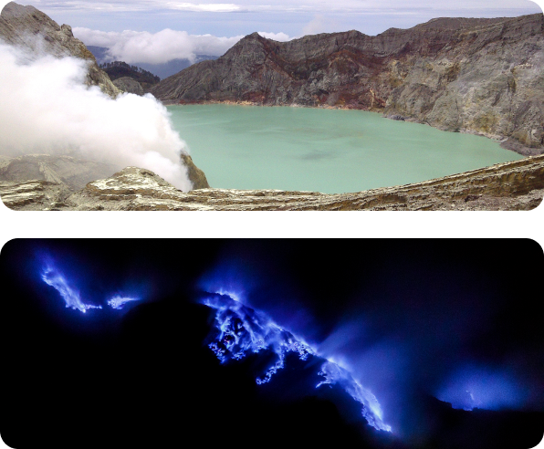
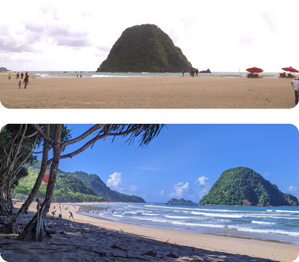

There are so many beautiful natural tourist places that you could find in Banyuwangi, but perhaps one of the most well-known is Kawah Ijen. It has blue fire and there are only two places in the world that has it. If you hike at midnight, there is a chance you could see the blue fire.

Because Banyuwangi is located at southeast Java, you could find so many beaches. But the one you can’t miss out is Pulau Merah. It’s a long white-sand beach and across there is an island (it’s actually a hill but often time the sea level is raising which separate the hill from the land). It’s named “Pulau Merah” because it has red-ish soil color. Local said that in the morning the hill is glowing which made the red soil more visible.
